Переваги Odigo

Ласкаво просимо до Odigo
Odigo-це сайт,на якому ви можете знайти цікаву інформацію про Японію.

Твій персональний Японський гід
Odigo-твій гід по Японії.Її цікавим та красивим місцям.
Надихайтеся на наступну подорож

Гора Фудзі

Кіото

Токіо

Ніїґата

Саппоро
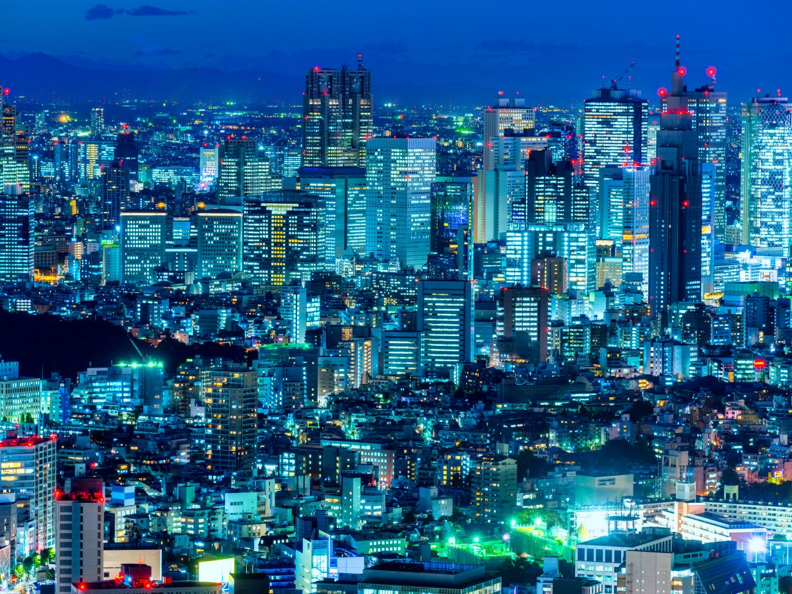
Токіо
Токіо або Префектура Токіо — столиця Японської Держави, столична префектура в Японії, в регіоні Канто. Розташована в східній частині острова Хоншю, на узбережжі Токійської затоки Тихого океану. Адміністративний центр префектури — двадцять три особливі райони Токіо.

Тотторі
Центральне місто в Японії, в префектурі Тотторі. Місто є адміністративним центром префектури Тотторі. Розташоване на півдні острова Хонсю, найкрупнішого острова Японії, недалеко від узбережжя Японського моря. Тотторі отримав статус міста 1 жовтня 1889 року.
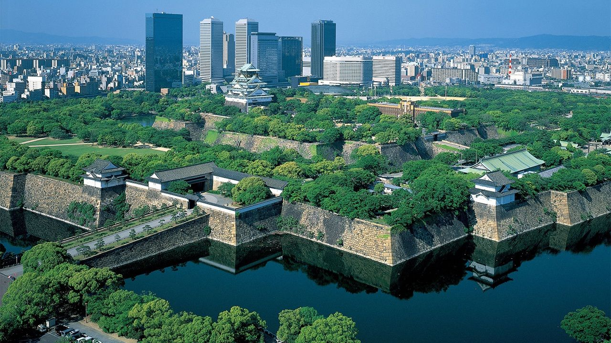
Осака
Місто, в префектурі Осака. Входить до списку міст державного значення Японії. Адміністративний центр префектури. Виникло на основі прихрамового містечка 15 століття біля монастиря Хонґан. Протягом 17 — 19 століття було найбільшим купецьким містом країни, через що називалося «кухнею Піднебесної».
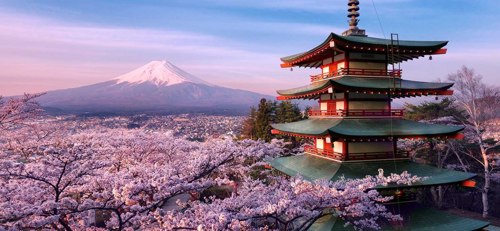
Кіото
Місто,в префектурі Кіото. Розташоване в південній частині префектури. Входить до списку міст державного значення Японії. Адміністративний центр префектури. Виникло на основі стародавньої японської столиці Хейан, резиденції японських імператорів протягом 794—1869 років.
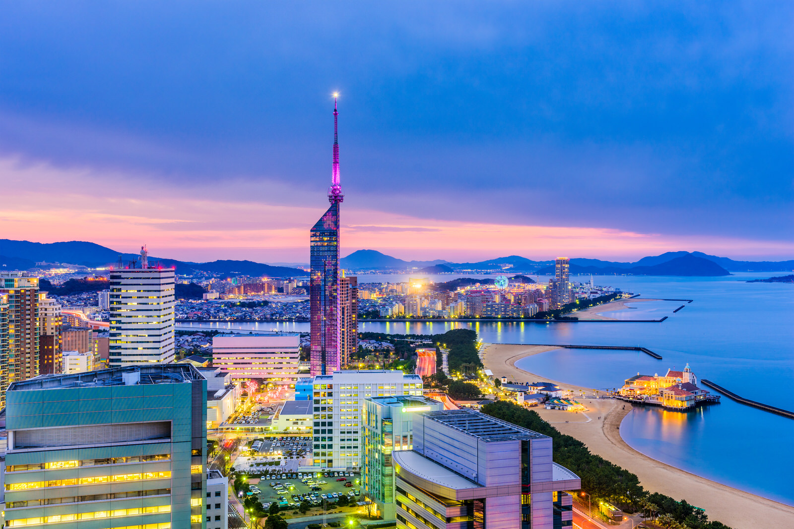
Фукуока
Фукуока — найбільше місто острова Кюсю і одне з центральних міст Японського архіпелагу. Вигідне розташування на берегах Японського моря і близькість до Корейського півострова та материкового Китаю обумовили характер цього міжнародного мегаполісу, важливого транспортного і торговельного центру. У середньовіччі місто було відоме під іменем Хаката і відігравало роль японського «вікна в Азію».
Пам'ятки Японії
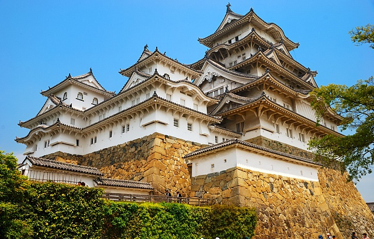
Замок Хімедзі
Замок Хімедзі — японський замок у місті Хімедзі, префектури Хіого, Японія. Назва походить від гори Хіме, у підніжжя якої він розташований. Також популярна назва «замок білої чаплі». Збудований у 1346 як один із замків роду Акамацу на високому пагорбі.
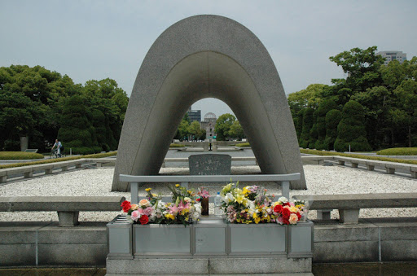
Меморіальний парк миру
Парк у центрі міста Хіросіма, Японія. Присвячений спадщині Хіросіми як першого міста у світі, що постраждало від ядерної атаки. У парку розташовані пам'ятники та будівлі, які призначені відображати різні сторони бомбардування.
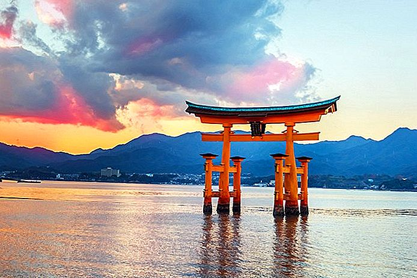
Острівний храм Іцукусіми
Шінтоїстське святилище у місті Хацукаїчі префектури Хірошіма, в Японії. Розташоване на острові Іцукушіма, відомішому як Міяджіма, у Внутрішньому Японському морі. Об'єкт Світової спадщини ЮНЕСКО з 1996 року. Національний скарб Японії.
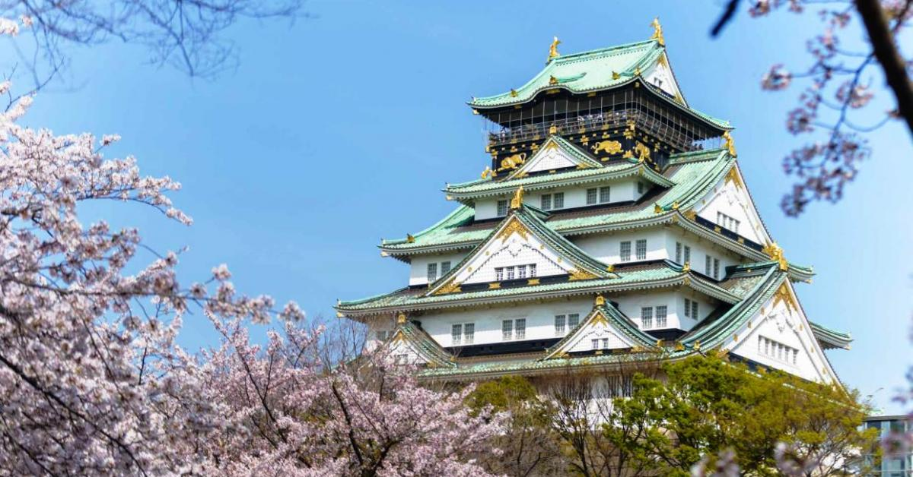
Замок Осака
Японський замок, який знаходиться в місті Осака, префектура Осака. Грав важливу роль в японській історії кінця XVI — початку XVII століть. В 1995 році Замок Осака визнаний важливою культурною спорудою та взятий під охорону японським урядом.
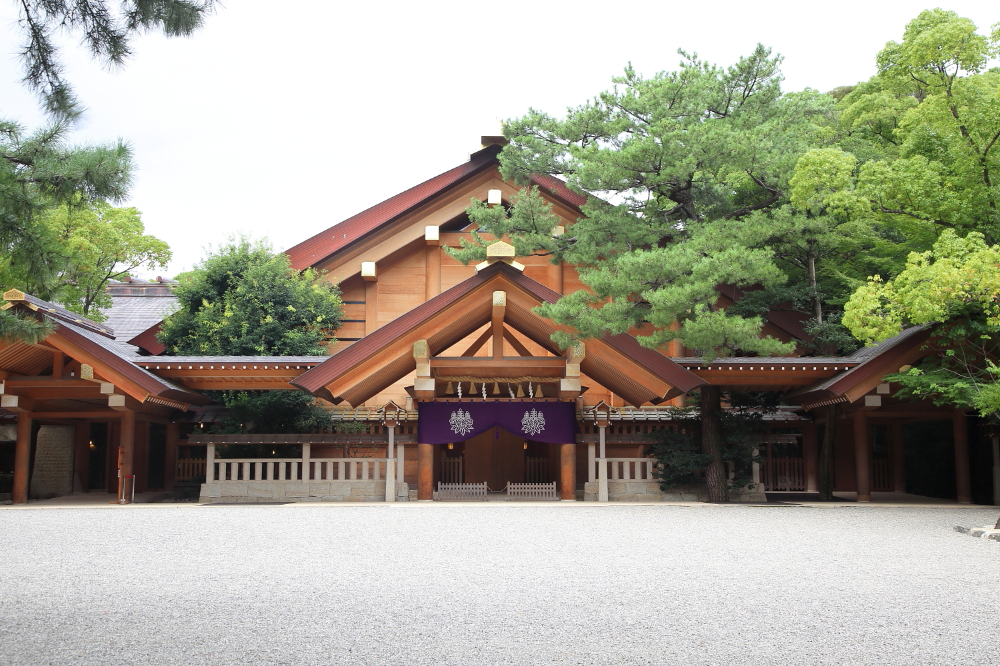
Храм Ацута
Cинтоїстське святилище в Японії. Розташоване в районі Ацута міста Наґоя префектури Айті. За переказами засноване 113 року. Головний храм історичної провінції Оварі, найбільше святилище префектури.Одна із трьох священних реліквій Імператора Японії
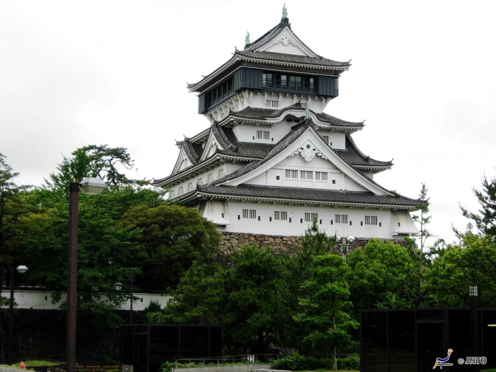
Замок Фукуока
Розташований у місті Чу-ку, Фукуока, Японія. Він також відомий як замок Майзуру або замок Секі. Японський уряд, який завершився в ранній період Едо для тозама-даймі Курода Нагамаса, був визнаний історичним місцем. Замок лежить у центрі Фукуоки, на вершині пагорба Фукусакі.
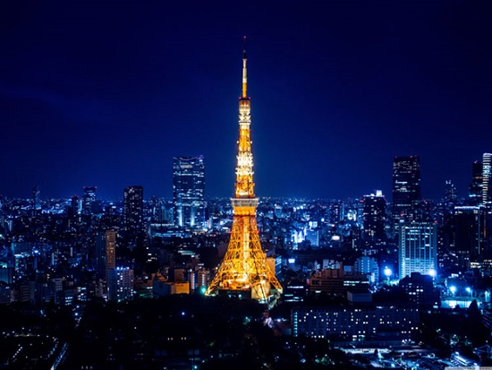
Токійська вежа
Токійська вежа — теле- та радіокомунікаційна вежа, яка розташована в особливому районі Мінато, Токіо, Японія. Висота вежі — 332,6 метра, що на момент побудови робило її найвищою сталевою спорудою у світі.
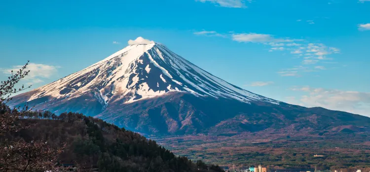
Гора Фудзі
Гора Фудзі є найвищою горою в Японії її висота становить 3776 метрів. Виключно симетричний конус вулкана є добре відомим символом Японії, його часто зображують на картинах, або фотографують. Кожен рік на Фудзі піднімаються 200.000 осіб.
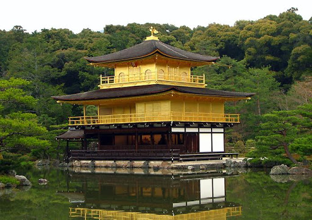